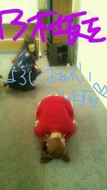
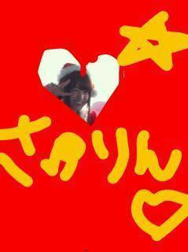

2012/1231Monまとめようっ(o・・o)
こんにちりんごっっ(o・・o)
さゆりんごっっ(o・・o)
まずは、ZEPPライブ
ありがとうございました！！
沢山の声援のなか
無事、成功させることができました！
まだまだ反省すべきところは
あるのですが
とっても楽しかったです♪
久しぶりに
大好きな偶然を言い訳にしてを
やらせていただいたのですが
体調不良と重なり
完全に準備不足やったなと
一番の後悔です(;_;)
つぎは完璧なものを
御見せできるように頑張ろう！！！
ZEPPライブでも
2012を振り返る企画をしたのですが
改めて振り返ると...
色んなことがありすぎましたね( ；∀；)
沢山の出会いがありましたが
その分別れもあったなー
2012年は
より人を好きになった年になりました。
ほとんど毎日一緒にいるメンバーも
より大好きになったし
私達に関わってくださってる
スタッフさんも大好きやし
2011年から変わらず会いに来てくださる方
新しく出会ったかた
松村の前から去った方、
みんな大好きです(*^^*)
ちょっと、思い出を語ると
夏には
雨とも言い難い
滝のような豪雨のなか
ライブもしました(*^^*)
あのライブで携帯が壊れたかた
折角集めたスタンプラリーの紙が
びしょびしょになった方と
本当に申し訳ない方が
沢山おりはったのですが
みなさん、
楽しかったよー
いい思い出になったよー
行ってよかったよー
って言ってくださって
なんか嬉しかったんよー(*^^*)笑
あと、PARCOのときは
松村が落ち込んでるとき
みなさんがコメントで
一緒に、松村のアピールポイント
考えてくれたり
こうやったらいいんちゃう？っていう
アドバイスをくださったのは
本当に嬉しかったですし
支えられました！！！
本当にありがとうございました！
ミニ個別があったり
イオンツアーがあったり
いろんな所に行ったなー(*^^*)
ＨＴＣの撮影はＮＹやったし(*^^*)
ほんまに撮影ばっかりだったので
いつかちゃんとＮＹ行きたいなって思いました(笑)
これもいい思い出(*^^*)笑
ほんまに1年で10年分くらいの
思い出がある気がします！！！
そんな2012年より
パワーアップした2013年にしたいです！
本当に今年はみなさんの
支えがあったからこそ
ここまでこれました！！
来年は今年より
衝撃的なこと、乗り越えなければならないこと、
そして楽しいことが
沢山待っていると思います！！
引き続き、甘ったれで
未熟な松村沙友理を支え
一緒に坂をのぼってくださると
とても喜びます！！
来年もよろしくお願いします＼(^^)／

それでは、よいお年を〜
2012年の松村沙友理でしたっ(o・・o)(o・・o)

2012/12/31 15:42


コメント(687)
乃木坂のおかげで、楽しかった！
りんご姫ー！
今日もお疲れ様!!
もう京都の個別売り切れなんだね！
ショックだー。
りんご食って頑張ります(笑)
さゆりんのクリスマスプレゼント
当たった人めっちゃ羨ましい！
次わ当たりますように！
じゃまたねー。
受験勉強の励みになりました。
これからあと二ヶ月も、さゆりんの笑顔に元気をもらって頑張る！！
来年も頑張ってなー( ´ ▽ ` )ﾉ
いい経験もしたし反省のこともあったんだね
2013年はもっとブログ更新してくれないですか？
面白いしもっと読みたいです。
良いお年を
また来年も様々な
イベント楽しみにしてるから*･゜ﾟ･*:.｡..｡.:*･'(*ﾟ▽ﾟ*)'･*:.｡. .｡.:*･゜ﾟ･*
来年もよろしくな(^-^)/
今年はいろいろあったんだね。
来年もガンバりんご
一年間お疲れ様！
ほんま色々あったよね
PARCOが一番の思い出かな
あのときは本当に辛かった泣
でも少しでも乗り越えてくれたみたいで良かったよ
ほんまにありがとう
まっちゅんにはたくさんの物もらったわ
感謝してます！
来年もよろしく！
まちゅむらファイヤー！
まちゅむらしかー！
ほなねﾉｼ
めちゃ可愛いよ*･゜ﾟ･*:.｡..｡.:*･'(*ﾟ▽ﾟ*)'･*:.｡. .｡.:*･゜ﾟ･*
来年もがんば^ - ^生駒ちゃん推しのきーくんでした^ - ^
来年もよろしく＼(^o^)／
まだ握手会行ったことないけどいける時は必ずいくよ！
今年も？色々ありましたね、
来年も頑張ってください！ 応援してます(^｡^)
ほんま
受験勉強乃木坂メンバーにたすけられてる
いつか恩返ししたいよー
ことしはほんとおつかれさま
zeepライブお疲れさま
行けんかったの辛かった(泣)
しかも偶然やったとかほんまにorz
今年いろいろあったね
２月の広島であったミニ握手にさゆりんがおったけん今の俺があるし...
さゆりんのおかげでこの１年がほんまに楽しかった！
来年もたくさんさゆりんのとこ行くけんよろしくね＼(^o^)／
1年間ありがと！
よいお年をー
でも、さゆりんなら、きっと乗り越えられるとおもいます＾＾
来年もおねがいします＾＾
2013年もよろしくな！
大阪帰ってこいよ！
さゆりんにであったしなぁ（＾ω＾）
これからのさゆりんの活躍も願ってるよー（≧∇≦）
今年はお疲れ様*\(^o^)/*
来年もしっかりさゆりんらしく
頑張ってな（≧∇≦）
応援しとるでぇ♪( ´▽｀)
まっつんからさゆりんごっっ(o・・o)へ
2012年ありがとう！
2013年もよろしくお願いします。
Zeppのことは後ほど書きます！
CDTVちゃんと見るね！
来年は更なる高みを目指して頑張ってくださいね(o^^o)
今年1年ありがとうございましたp(^_^)q
来年もよろしくお願いします！！
良いお年を(=´∀｀)人(´∀｀=)
相変わらず可愛いネ（~▽~＠）♪♪♪
来年も絶対応援します！
じゃあ良いお年を♪
バイバイバイッチャ(///ω///)♪
握手会行ったことないけど、行ってみたいなぁ(´・д・｀)
COUNTDOWNTV楽しみにしてます!!
相変わらず可愛いネ（~▽~＠）♪♪♪
来年も絶対応援します！
じゃあ良いお年を♪
バイバイバイッチャ(///ω///)♪
偶然を言い訳にして、大好きだから生で聴いてみたかったなぁ
私は今年さゆりんファンになったんだけど、夫婦で乃木坂を応援してるから夫婦間の会話で乃木坂率が高かったよー
年初めの握手会は体調次第で参加したいと思っております！！
来年も頑張ってね！！これからも応援していきます
Zeppお疲れ様。
Liveを前で、さゆりんポジで見たのは久々だったけど色々感じる部分はあったねぇ。
長くなるの間違いないから、また手紙に感想書くわ。
まあ、ガキ使見たいのもあるけど(笑)
京都と比べて顔疲れてるなとは思ったけど、調子良くなかったんね。
カウントダウン終わったら少しはゆっくり出来るんかな？
まあ、ゆっくり出来るようなら、ほんまゆっくりしてくださいな。
ではでは、幕張でお会いしましょう！
よいお年を！
画面、誌面でですが...
いつか実際に会いたいです！
2013年も乃木充して行きますよ(｀・ω・´)
三重からパワーを！！(笑)
来年も楽しいことがたくさんあるといいね(^-^)/
そして来年もさゆりんごパンチを沢山かましてください！
はじめまして！
サンタさゆりんかわいい！！
ZEPPライブ楽しかったよ！
1年間お疲れ！！！
来年もがんばってやーーー(^O^)
リンゴパーンチ！！！
今年も1年お疲れさまでした
僕は、『走れ!Bicycle』からのファンなので、
乃木坂そしてさゆりんさんの1年の活動を全て知っているわけでは無いのですが、
それでも、今年1年で様々なさゆりんさんを見れたのは、
僕にとってすごい思い出です。
パルコでのさゆりんさんは、とても一生懸命に頑張っていたと思います。
そして、アメーバスタジオでの身体を張ったパフォーマンス、
アイドル魂を感じました
12月のZeppライブに行けなかったのが、とても心残りですが、
来年は是非ライブに行きたいと思います。
あと、握手会も行ったことが無いので、是非行きたいです。
来年も、さゆりんさんにとって素敵な1年になりますように。
それでは。
P.S. 年賀状を送りました
まいやん推しやけどさゆりんのこともファンになってしまいました。来年も会いに行くね
さらなる活躍期待しています。
思い出いっぱいやね。
そんなに思い出がいっぱいあることは幸せなことだと思います。（泣）
もう2013年か〜早いな〜
2013年からも応援し続けます！
ではまた更新待ってんでー。
んじゃよいお年を(^-^)/
今年は色々あったね(^O^)来年も頑張って(≧∇≦)
じゃあよいお年を…
バイッヾ(・◇・)ノ
Zepp東京のライブに行かせてもらって
楽しそうにしてるさゆりんごを見て、
なんか幸せでした！
2013年も楽しそうにしてる姿で
元気をください！
そして、頑張ってください(*^^*)
ちなみに発表コメでしたー
どーも、ぴよすけです。
2012年も、あと少しで終わっちゃうね(>_<)
さゆりんにとって、2012年は色々なことが起きたよね(^-^)
乃木坂に入って人生が大きく変わっていってるね(^^)
僕は今年さゆりんを知ってファンになってまだ9ヵ月くらいだから
PARCOでさゆりんが辛い思いをしてたことが一番印象的かな(T-T)
実際に現場にいって
さゆりんに声援を送ることはできなかったけど
応援してたよ(^-^)
ほんと2012年はさゆりんにあえてよかった(*^^*)
大学受験終わって大学生になって、
ふとテレビをつけたら乃木坂が出てて
さゆりんがすごい可愛くて
んで実際に握手行ってみたら
さゆりんの虜になって(*^^*)笑
今年は凄く楽しかった＼(^_^)／
いまでは、さゆりんに会うためにバイトと学校頑張ってるよ(^-^)
2012年最後だから
僕のほんとの気持ち書くね
実はELOの美女散歩のｺｰﾅｰ見てから
さゆりんと結婚したいとおもって
自分磨きとおしゃれになって
さゆりんに見会った人間になれるように頑張ってます(*^^*)
言っちゃった笑
じゃあよいお年を
今年はありがとね(^o^)/来年もよろしくねー＼(^_^)／
CDTV見るからね＼(^_^)／
ぴよすけ40
今年も1年間お疲れさま！
もう乃木坂の中心やね(≧∇≦)
来年ももっともっと色々あると思うけど
今年のようにグループを引っ張っててな
来年の最初の個握だけど…
さゆりんの所に行くんだよね(≧∇≦)
黄色いメガネを覚えててね
ほなまた、よいお年を！
滝のような豪雨のなか
ライブもしました(*^^*)
↑
あれは本当にメガシャキそのものだったな～
雷は鳴りまくってたし
携帯をＨＴＣ-Ｊに変えたばっかりだったから、
水没させたらやばいと、結構必死だった
でもね、あれは今でもＴＡＫＥ的には神イベなんよ～
いい思い出をありがとう！
あと、いい思い出ってば、ＧＷの横浜パシフィコ。
首から提げた“うまい棒”に、メッチャ沸いとったもんな！
ななみん用のネタだったにもかかわらず。
まあ、ななみんもすっかり棒じゃなくなってしまったが…
とにかく、今年１年おもろい思い出をありがとうね！
来年も頑張ろうゼ♪
ＴＡＫＥ＠１９７３
年明けの幕張、さゆりんごに初握手しに行きます‼
さゆりんごパンチお願いしてよかですか？
よいお年を〜(⌒▽⌒)
ZEPP最高だったよー*\(^o^)/*
おつかれ！
2013年も頑張ってね*\(^o^)/*
おつかれーっ＼(^o^)／
人生初めてのライブでしたw
まあね、楽しかったね(^-^)/
2012ももう、おわるね…
ガキ使で年越しなのだ‼
さゆりんと年越ししたかった…（笑）
今年は乃木坂デビューだったよね(^O^)／
それが1番人生が変わった…
さゆりん‼
来年もよろしくね( ´ ▽ ` )ﾉ
さゆりん大好き‼
僕はついこの前乃木坂ファンになりましたーー！！
乃木坂で皆大好きだけど、1番さゆりんが好きです！！
特に関西弁がすきやわ～～！！(笑) 僕はもうすぐ高校受験があるのですが、勉強は大変です…でもさゆりんの笑顔でやる気がめっちゃでて頑張ろうっていう気になれます！！
だから、来年も明るく笑顔で頑張ってください！！応援してます！！
あと、関西弁もいっぱい使ってくださーーい！！
ほな、さいなら～～！！（≧∇≦）(笑)
初コメです(ﾟ∀ﾟ)
今年はいろいろとお疲れ様( ´∀｀)
2013年もさゆりんごパンチいっぱいお願いしたいんよー♪(´ε｀ )笑
来年も乃木坂46にとっていい年になるといいね(*´ω｀*)
良いお年をー＼(^o^)／
ではまた(^○^)
よっぴー♪
踊りありがとう(^^)
さゆりんご
今年はデビューシングルでのイオンツアーで初めて生さゆりんごに会えて嬉しかったです
その後はなかなか会える機会がないですが遠くから応援しています
今年もお世話になりました
来年もよろしくお願いします
よいお年を
頑張ってください
ライブ、キレキレだったね 笑
年またぎでお仕事大変だと思うけど頑張ってね＼(^_^)／
よいお年を♪
りんご姫、体調には気をつけて下さいね。倒れたら大変ですから、体第一に考えて、自分を大事にして下さいm(__)m
出会った人も、去った人からも、色々学んで、りんご姫にとって、プラスに動いたのかもしれないですねo(｀ω´ )o
来年も更なる活躍に期待してます( ´ ▽ ` )ﾉ
それでは、良いお年をお迎え下さいね(бвб)ﾉ♪
P.S 来年はりんご姫は14歳になるんですか？
コメントする